- Um jogo de sobrevivência no espaço: asteroides vêm de todas as direções.
- A nave desvia; o objetivo é sobreviver o máximo de tempo.
- Menu inicial, HUD com tempo e recorde, tela de Game Over e dificuldade que aumenta com o tempo.
- Arte provisória: o ícone do Godot. Na 2ª parte do curso a gente desenha tudo no LibreSprite e troca.
Mini curso de Godot 4
AstroDash
Do zero ao jogo de sobrevivência no espaço, em 2 aulas
Godot 4.7 · GDScript · 2 × 1h20
Use ← → ou clique para navegar · M índice · F tela cheia
O que vamos construir
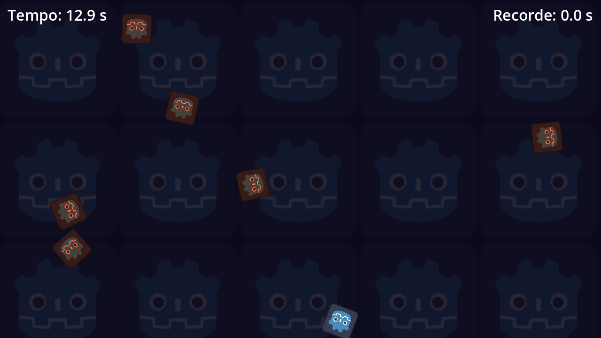
Plano das aulas
| Aula 1 (1h20) | Aula 2 (1h20) | |
|---|---|---|
| 1 | Apresentação do Godot e configurações do projeto | GameManager (Autoload) e HUD |
| 2 | A nave: cena, movimento e colisão | Componentes: vida e área de dano |
| 3 | A fase: paredes e cena principal | Game Over e reiniciar |
| 4 | O asteroide: corpo físico e sinais | Menu inicial |
| 5 | O spawner: asteroides vindo de todo lado | Dificuldade, fundo animado e preparação da arte |
Dica Se alguém se perder na Aula 1, o projeto checkpoint-aula1 no repositório começa a Aula 2 do ponto certo.
Como o projeto é organizado
Managers
GameManager (Autoload): tempo, recorde, troca de cena e o aviso de game over.
Componentes
HealthComponent e HurtboxComponent: peças reutilizáveis que você encaixa em qualquer cena.
Entidades
Player e Asteroid: cada uma é uma cena independente.
Sistemas
AsteroidSpawner: cria os asteroides e controla a dificuldade.
Interface
HUD, GameOver e MainMenu: só ouvem os sinais do GameManager.
Fases
Game junta tudo: fundo, paredes, spawner, player e UI.
Por quê? Cada peça faz uma coisa só e conversa por sinais. Assim dá para adicionar inimigos, power-ups ou novas fases sem quebrar o resto.
Aula 1
Nave, asteroides e o primeiro jogo rodando
- 1Conhecer o editor
- 2Configurar o projeto
- 3Player
- 4Cena Game e paredes
- 5Asteroide
- 6Spawner
Criando o projeto
- Abra o Godot 4 → Criar (Gerenciador de Projetos).
- Nome: AstroDash. Escolha uma pasta vazia.
- Renderizador: Forward+ (o padrão serve).
- Clique em Criar e Editar.
Dica Tudo dentro do projeto é acessado pelo caminho
res:// (a pasta do projeto).- Cena: a árvore de nós da cena aberta
- Arquivos: pastas e arquivos (
res://) - Viewport: onde você vê e arrasta as coisas
- Inspetor: propriedades do nó selecionado (também tem Sinais e Grupos)
- Telas: 2D, 3D, Script...
- Rodar o jogo: F5 projeto, F6 cena atual
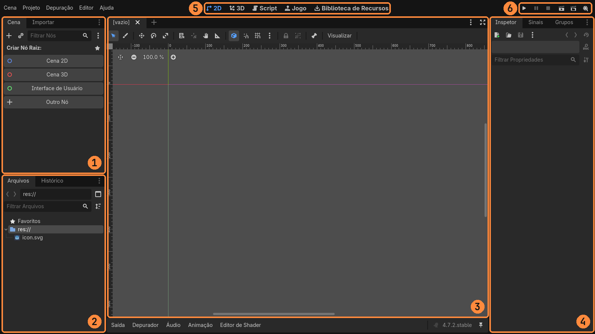
Nós e cenas em 1 minuto
- Tudo no Godot é um nó (Node). Cada tipo de nó faz uma coisa: desenhar uma imagem, colidir, tocar som, contar tempo...
- Uma cena é uma árvore de nós salva em um arquivo
.tscn. - Cenas podem ser instanciadas dentro de outras: a cena Game vai conter a cena Player, que por sua vez contém componentes.
- Sinais são avisos que um nó emite ("o timer acabou", "o botão foi apertado"). Outros nós se conectam a eles.
- Regra de ouro do curso: se dá para fazer no editor, faz no editor. Código só para lógica.
Configurações: tamanho da tela
- Projeto → Configurações do Projeto → aba Geral.
- Ligue Configurações Avançadas (canto superior direito).
- Busque
size→ Exibição → Janela: - Largura do Viewport = 640, Altura do Viewport = 360
- Substituir Largura da Janela = 1280, Altura = 720
Por quê? O jogo é desenhado em 640×360 (ótimo para pixel art) e a janela abre em 1280×720 (2× maior).
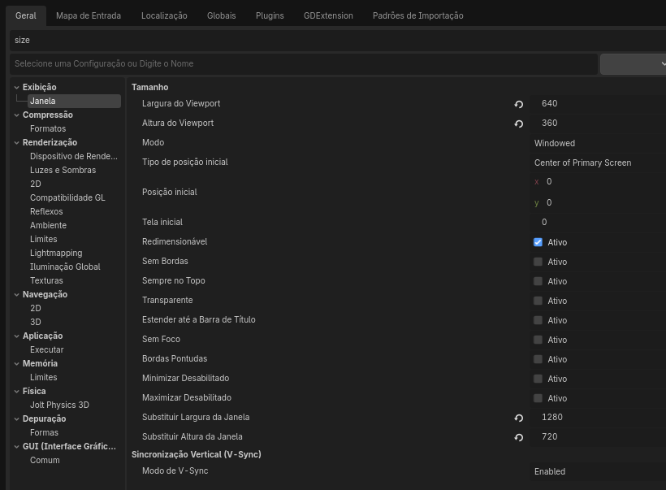
Configurações: esticar e pixel art
- Busque
stretch→ Exibição → Janela → Esticar: - Modo =
canvas_items, Aspecto =keep, Modo de Escalonamento =integer - Busque
texture_filter→ Filtro de Textura Padrão =Nearest - Busque
clear_color→ Cor de Fundo Padrão: um azul bem escuro (ex.:#0a0819)
Por quê? Nearest deixa o pixel art nítido (sem borrar) quando a imagem é ampliada.
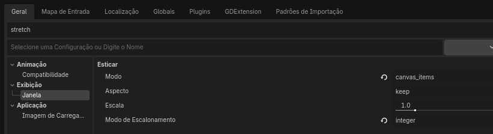
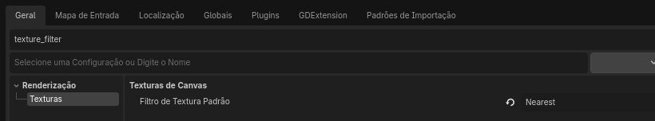
Configurações: nomes das camadas de física
- Busque
2d_physics→ Nomes de Camadas → Física 2D. - Layer 1 =
player, Layer 2 =asteroides, Layer 3 =paredes
| Objeto | Está na camada (Layer) | Enxerga (Mask) |
|---|---|---|
| Player (corpo) | player | paredes |
| Hurtbox do Player | nenhuma | asteroides |
| Asteroide | asteroides | nenhuma |
| Paredes | paredes | nenhuma |
Por quê? Layer = onde eu estou. Mask = o que eu detecto. Asteroides atravessam tudo, mas a Hurtbox do player sente quando um encosta.
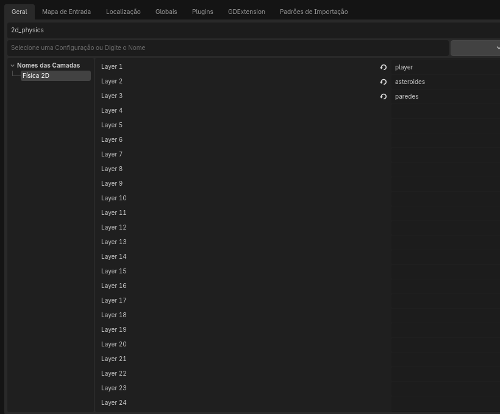
Configurações: Mapa de Entrada
- Aba Mapa de Entrada.
- Em Adicionar Nova Ação crie:
move_left,move_right,move_up,move_down. - Clique no + de cada ação e aperte a tecla: A/D/W/S e as setas.
- Opcional: adicione o analógico esquerdo do controle (Eixo do Joypad).
Ferramenta nativa O código pede "move_left", não "tecla A". Trocar ou adicionar controles depois não mexe em nenhuma linha de código.
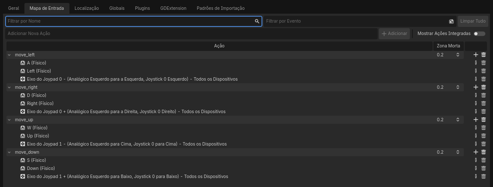
Estrutura de pastas
No painel Arquivos: botão direito em res:// → Nova Pasta.
| Pasta | O que guarda |
|---|---|
autoload/ | Managers globais (GameManager) |
components/ | Componentes reutilizáveis |
entities/player/ | Cena e script da nave |
entities/asteroid/ | Cena e script do asteroide |
systems/asteroid_spawner/ | Gerador de asteroides |
levels/game/ | A fase principal |
levels/background/ | Fundo animado |
ui/ | HUD, Game Over, Menu e tema |
assets/sprites/ | Artes (2ª parte do curso) |
Dica Cada cena fica numa pasta junto com seu script. Fica fácil achar e reaproveitar.
Player: criando a cena
- Cena → Nova Cena → Outro Nó.
- Busque CharacterBody2D e clique em Criar.
- Renomeie para Player (F2).
- Com o Player selecionado, Ctrl + A (Adicionar Nó Filho): Sprite2D.
- De novo: CollisionShape2D.
- Salve (Ctrl + S) em
entities/player/player.tscn
Por quê? CharacterBody2D é o nó feito para personagens controlados pelo jogador: ele se move com
move_and_slide() e para nas paredes sozinho.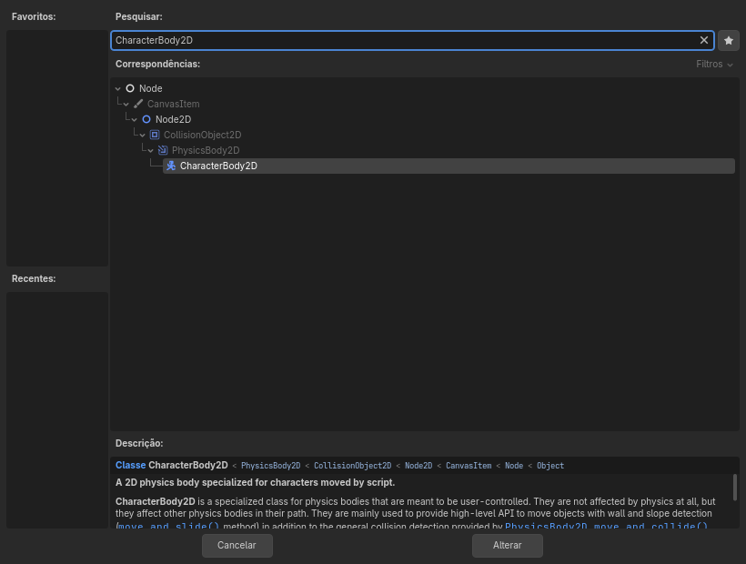
Player: sprite e colisão
- Selecione Sprite2D → arraste o
icon.svgdos Arquivos para Texture. - Em Transform → Scale coloque
0.25(o ícone tem 128px → fica 32px). - Selecione CollisionShape2D → Shape → Novo CircleShape2D.
- Clique no círculo e ajuste Radius =
12(um pouco menor que a nave = jogo mais justo).
Atenção Desenhe a nave da 2ª parte apontando para a direita. No Godot, ângulo 0 = direita.
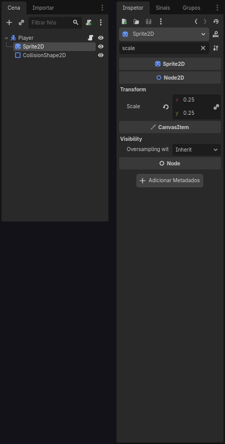
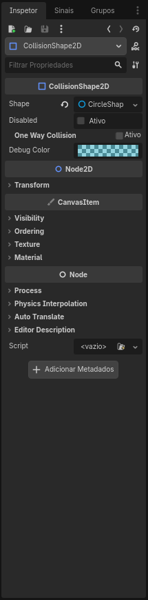
Player: propriedades no Inspetor
- Selecione o nó Player.
- Motion Mode =
Floating(jogo visto de cima, sem chão). - Collision → Layer: só a 1 (player).
- Collision → Mask: só a 3 (paredes).
Dica Passe o mouse sobre os quadradinhos de Layer/Mask: aparecem os nomes que demos (player, asteroides, paredes).
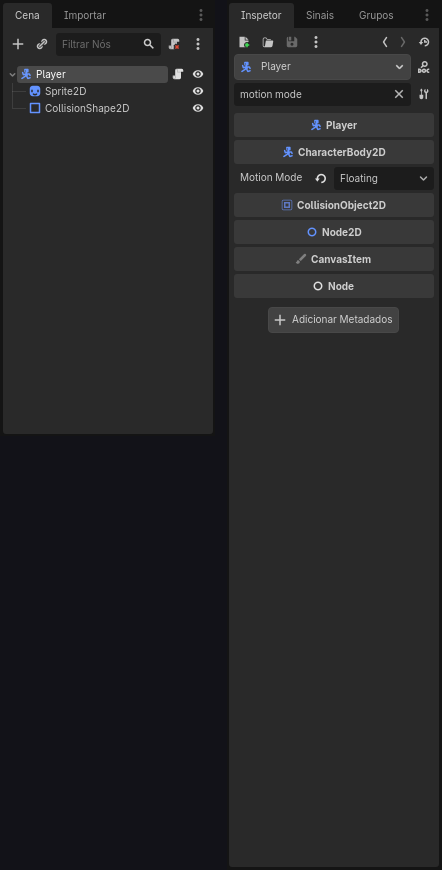
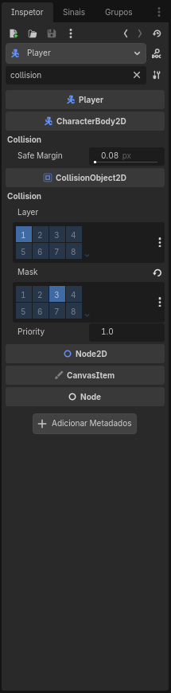
Player: script de movimento
Selecione o Player → botão Anexar Script (pergaminho com +) → salve em
entities/player/player.gd. @export faz a variável aparecer no Inspetor: dá para ajustar a velocidade sem abrir o código.entities/player/player.gd
class_name Player
extends CharacterBody2D
## Velocidade máxima da nave (pixels por segundo).
@export var speed: float = 180.0
## Quão rápido a nave acelera e freia.
@export var acceleration: float = 900.0
## Quão rápido a nave gira para a direção do movimento.
@export var rotation_speed: float = 10.0
func _physics_process(delta: float) -> void:
var direction := Input.get_vector("move_left", "move_right", "move_up", "move_down")
velocity = velocity.move_toward(direction * speed, acceleration * delta)
move_and_slide()
if direction != Vector2.ZERO:
rotation = lerp_angle(rotation, direction.angle(), rotation_speed * delta)Entendendo o movimento
Input.get_vector(...)junta as 4 ações num vetor de direção (já normalizado, funciona com analógico).velocity.move_toward(alvo, aceleração * delta)acelera e freia suavemente, dando sensação de nave.move_and_slide()move o corpo e respeita colisões (as paredes).lerp_anglegira a nave aos poucos para onde ela está indo.delta= tempo desde o último frame. Multiplicar por delta deixa o jogo igual em qualquer PC.
Dica Mude Speed, Acceleration e Rotation Speed no Inspetor com o jogo rodando e sinta a diferença.
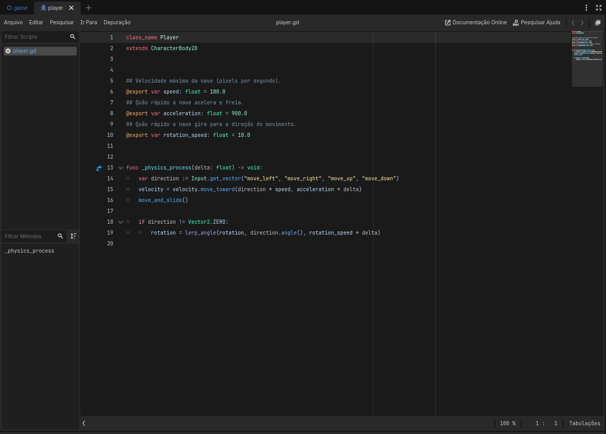
Cena Game e as paredes
- Nova Cena → Cena 2D (Node2D) → renomeie Game. Salve em
levels/game/game.tscn - Adicione um StaticBody2D chamado Walls. Layer = 3 (paredes), Mask = nenhuma.
- Dentro dele, 4× CollisionShape2D com Shape WorldBoundaryShape2D (Bottom, Top, Left, Right).
- Posicione cada uma (tabela ao lado). A seta vermelha aponta para dentro da tela.
| Nó | Position | Rotation |
|---|---|---|
| Bottom | (320, 360) | 0° |
| Top | (320, 0) | 180° |
| Left | (0, 180) | 90° |
| Right | (640, 180) | -90° |
Ferramenta nativa WorldBoundaryShape2D é uma parede infinita. Dá para criar a primeira e depois Duplicar (Ctrl + D), usando o mesmo shape.
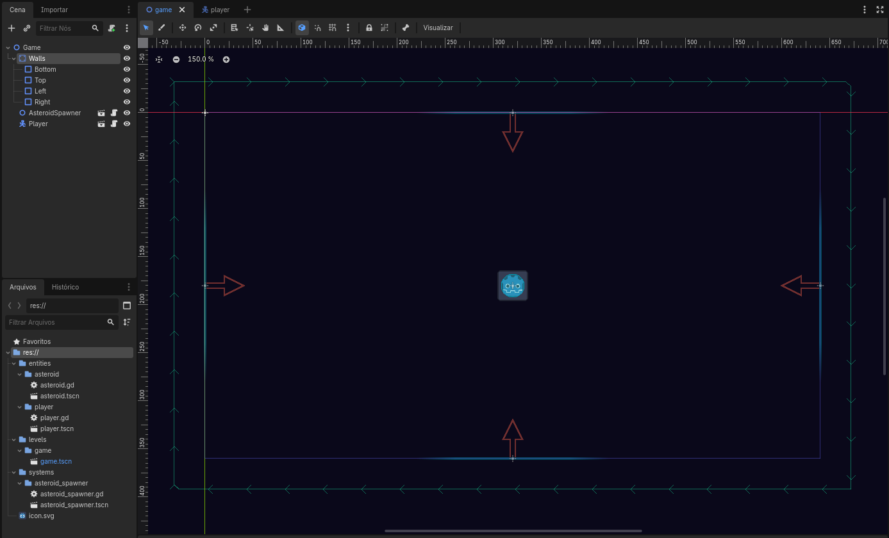
Colocando o Player na fase
- Arraste
entities/player/player.tscndos Arquivos para o viewport da cena Game (ou use o botão Instanciar Cena Filha, o elo de corrente). - Position do Player =
(320, 180)(centro da tela). - Defina Game como cena principal: botão direito em
game.tscn→ Definir como Cena Principal. - Aperte F5 e voe com WASD/setas!
Dica O retângulo azul no viewport é a tela do jogo (640×360).
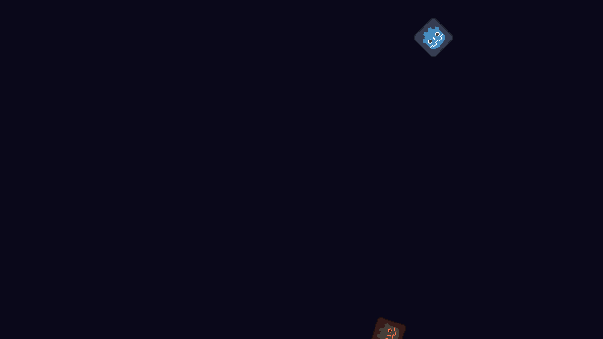
Asteroide: um corpo físico
- Nova cena com raiz RigidBody2D → renomeie Asteroid. Salve em
entities/asteroid/asteroid.tscn - Filhos: Sprite2D (icon.svg, Scale 0.25, Modulate laranja), CollisionShape2D (círculo, raio 14) e VisibleOnScreenNotifier2D.
- No Asteroid: Gravity Scale =
0(espaço não tem gravidade!). - Linear → Damp Mode =
Replacee Angular → Damp Mode =Replace(com Damp 0 ele não perde velocidade). - Layer = 2 (asteroides), Mask = nenhuma (atravessa tudo).
Ferramenta nativa O RigidBody2D é movido pelo motor de física: a gente só dá a velocidade inicial e o Godot faz o resto, inclusive o giro.
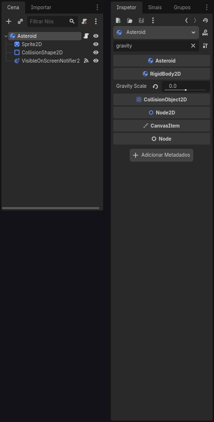
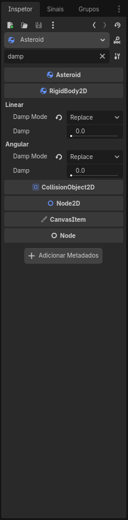
Asteroide: sumir ao sair da tela (sem código!)
- Selecione VisibleOnScreenNotifier2D → aba Sinais.
- Duplo clique em
screen_exited(). - Escolha o nó Asteroid e clique em Escolher ao lado do Método Receptor.
- Selecione
queue_free(desligue "Somente Métodos de Script" se ele não aparecer) → Conectar.
Por quê? Sem isso, os asteroides que saem da tela continuariam existindo para sempre e o jogo ficaria lento.
Ferramenta nativa Conectamos um sinal direto a uma função que já existe em todo nó (
queue_free = "me apague"). Zero linhas de código.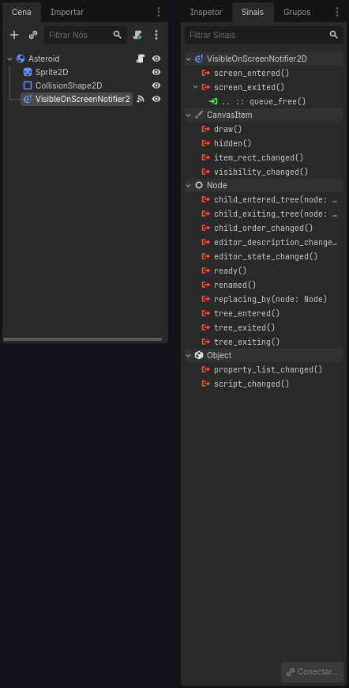
Asteroide: script
class_name Asteroid registra um tipo novo: outros scripts podem escrever var a: Asteroid. Quem chama launch() é o spawner, que diz a direção.entities/asteroid/asteroid.gd
class_name Asteroid
extends RigidBody2D
@export var min_speed: float = 60.0
@export var max_speed: float = 120.0
## Velocidade máxima de giro (radianos por segundo).
@export var max_spin: float = 3.0
## Lança o asteroide em uma direção. Quem chama é o AsteroidSpawner.
func launch(direction: Vector2, speed_multiplier: float = 1.0) -> void:
linear_velocity = direction * randf_range(min_speed, max_speed) * speed_multiplier
angular_velocity = randf_range(-max_spin, max_spin)Spawner: o caminho em volta da tela
- Nova cena com raiz Node2D → AsteroidSpawner. Salve em
systems/asteroid_spawner/asteroid_spawner.tscn - Adicione Path2D (renomeie SpawnPath).
- Com ele selecionado, use a ferramenta Adicionar Ponto da barra do viewport e clique nos 4 cantos por fora do retângulo azul: (-32,-32), (672,-32), (672,392), (-32,392).
- Clique em Fechar Curva.
- Dentro do SpawnPath, adicione PathFollow2D (SpawnPoint) e desligue Rotates.
Dica Não precisa ser exato: basta o retângulo ficar um pouco fora da tela, para o asteroide nascer escondido.
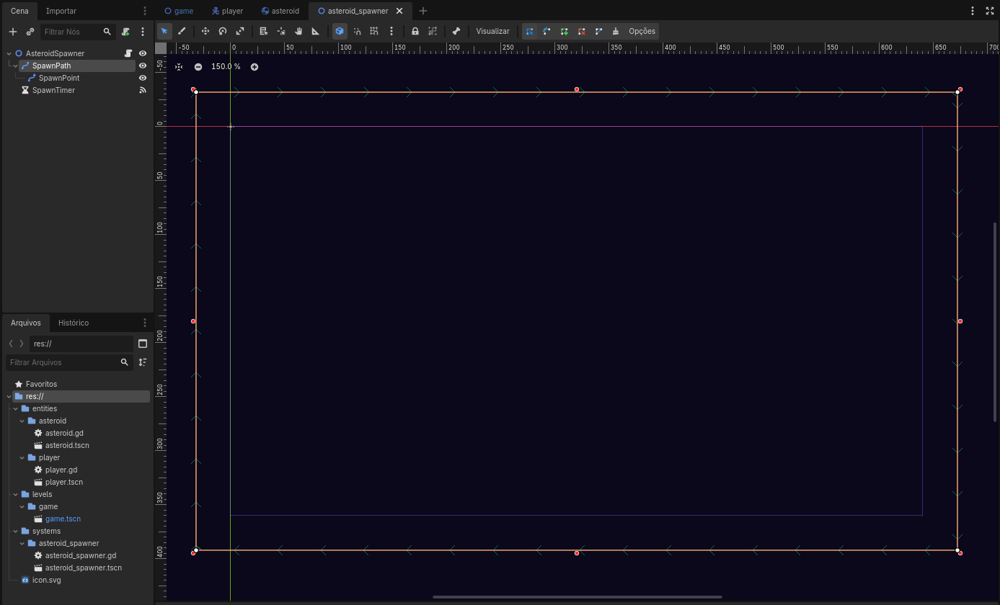
Spawner: o Timer
- Adicione um Timer (renomeie SpawnTimer) como filho do AsteroidSpawner.
- Wait Time = 1 e Autostart = ligado.
- Anexe um script vazio ao AsteroidSpawner (próximo slide).
- Selecione o SpawnTimer → aba Sinais → duplo clique em
timeout()→ escolha AsteroidSpawner → Conectar.
Ferramenta nativa O Godot cria a função
_on_spawn_timer_timeout no script para você. O ícone verde ao lado do sinal mostra que ele está conectado.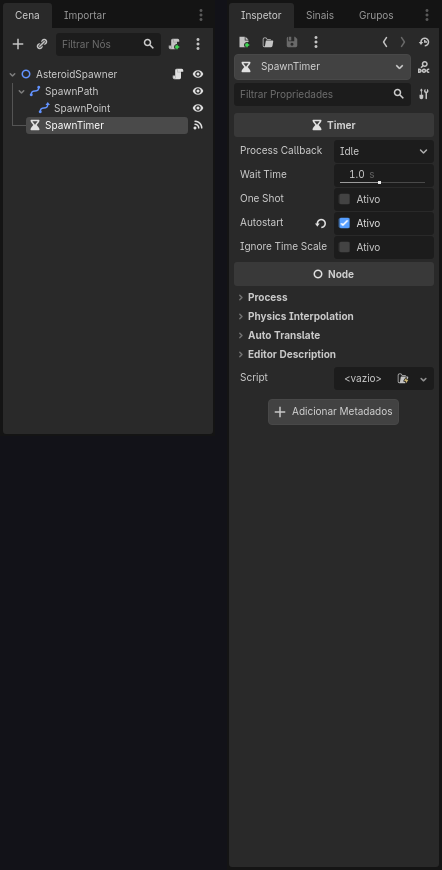
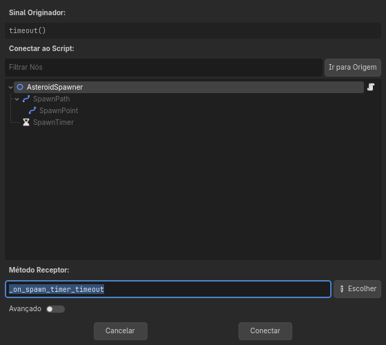
Spawner: script (versão Aula 1) (1/2)
Depois de salvar, selecione o AsteroidSpawner e arraste
asteroid.tscn para a propriedade Asteroid Scene no Inspetor.systems/asteroid_spawner/asteroid_spawner.gd
class_name AsteroidSpawner
extends Node2D
## Cria asteroides em volta da tela, cruzando a tela em direções aleatórias.
@export var asteroid_scene: PackedScene
@onready var spawn_point: PathFollow2D = $SpawnPath/SpawnPoint
func _on_spawn_timer_timeout() -> void:
spawn_point.progress_ratio = randf()
var asteroid: Asteroid = asteroid_scene.instantiate()
add_child(asteroid)
asteroid.global_position = spawn_point.global_position
var target := _pick_target()
asteroid.launch(asteroid.global_position.direction_to(target))Spawner: script (versão Aula 1) (2/2)
systems/asteroid_spawner/asteroid_spawner.gd
## Escolhe um ponto qualquer da tela para o asteroide atravessar.
func _pick_target() -> Vector2:
var screen := get_viewport_rect().size
return Vector2(randf_range(0, screen.x), randf_range(0, screen.y))Juntando tudo
- Abra a cena Game e instancie
asteroid_spawner.tscn. - Arraste o AsteroidSpawner para cima do Player na árvore (assim a nave é desenhada por cima dos asteroides).
- Aperte F5.
Atenção Os asteroides ainda atravessam a nave: o dano vem na Aula 2 com os componentes.
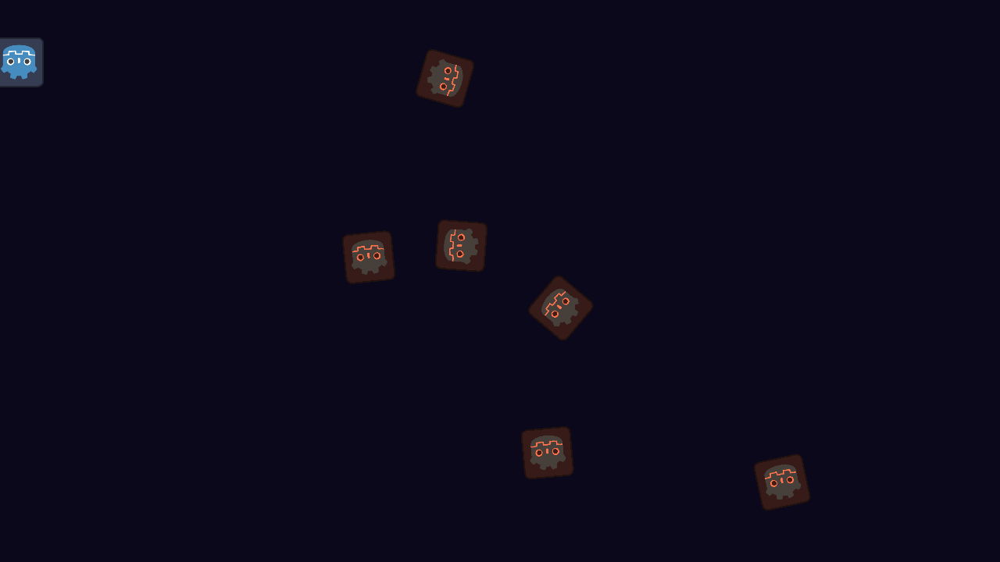
Resumo da Aula 1
- Configuramos resolução, pixel art, camadas de física e controles pelo editor.
- CharacterBody2D para a nave, RigidBody2D para os asteroides, StaticBody2D para as paredes.
- Path2D + PathFollow2D + Timer para gerar asteroides em volta da tela.
- Sinais conectados pelo editor, inclusive direto para
queue_free.
Dica Projeto deste ponto: pasta projeto/checkpoint-aula1 do repositório.
Aula 2
Vida, game over, menu, dificuldade e preparação para a arte
- 1GameManager
- 2HUD
- 3Componentes
- 4Game Over
- 5Menu
- 6Dificuldade
- 7Fundo e tema
- 8Preparar a arte
GameManager: o cérebro da partida (1/4)
Crie em
autoload/game_manager.gd (Arquivos → botão direito → Novo → Script, herdando de Node).autoload/game_manager.gd
extends Node
## GameManager (Autoload): guarda o estado da partida e o recorde.
## Qualquer script do jogo pode acessar com GameManager.alguma_coisa
## Avisa que uma partida nova começou.
signal game_started
## Avisa que o jogador morreu e a partida acabou.
signal game_over
const GAME_SCENE := "res://levels/game/game.tscn"
const MENU_SCENE := "res://ui/main_menu/main_menu.tscn"
const SAVE_PATH := "user://save.cfg"
var time_survived: float = 0.0
var best_time: float = 0.0
var is_playing: bool = falseGameManager: o cérebro da partida (2/4)
autoload/game_manager.gd
func _ready() -> void:
load_best_time()
func _process(delta: float) -> void:
if is_playing:
time_survived += delta
func start_game() -> void:
time_survived = 0.0
is_playing = true
game_started.emit()GameManager: o cérebro da partida (3/4)
autoload/game_manager.gd
func end_game() -> void:
if not is_playing:
return
is_playing = false
if time_survived > best_time:
best_time = time_survived
save_best_time()
game_over.emit()
func go_to_game() -> void:
get_tree().change_scene_to_file(GAME_SCENE)
func go_to_menu() -> void:
is_playing = false
get_tree().change_scene_to_file(MENU_SCENE)GameManager: o cérebro da partida (4/4)
autoload/game_manager.gd
func save_best_time() -> void:
var config := ConfigFile.new()
config.set_value("score", "best_time", best_time)
config.save(SAVE_PATH)
func load_best_time() -> void:
var config := ConfigFile.new()
if config.load(SAVE_PATH) == OK:
best_time = config.get_value("score", "best_time", 0.0)Registrando o Autoload
- Projeto → Configurações do Projeto → aba Globais → Autoload.
- Clique em Selecionar Script/Cena e escolha
autoload/game_manager.gd. - Confira o nome GameManager e deixe Variável Global habilitada.
Por quê? Um Autoload é carregado antes de qualquer cena e nunca é apagado. Qualquer script pode escrever
GameManager.best_time.Dica Por isso ele guarda o que precisa sobreviver à troca de cena: recorde, estado da partida, e é ele quem troca de cena.
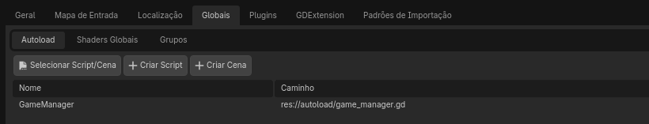
Game: avisando que a partida começou
Anexe este script ao nó raiz Game. Toda vez que a cena Game carrega, o cronômetro zera e começa.
levels/game/game.gd
extends Node2D
func _ready() -> void:
GameManager.start_game()HUD: tempo e recorde
- Nova cena com raiz CanvasLayer → HUD. Salve em
ui/hud/hud.tscn - Filhos: MarginContainer (Layout Top Wide, margens 8/4/8) → HBoxContainer → 2× Label.
- TimeLabel e BestLabel: Size Flags Horizontal = Expand. No BestLabel, Horizontal Alignment = Right.
- Botão direito em cada Label → Acessar como Nome Único (aparece o
%). - Instancie o HUD na cena Game.
Ferramenta nativa CanvasLayer desenha por cima do jogo e não se mexe com a câmera. Containers organizam a UI sozinhos.
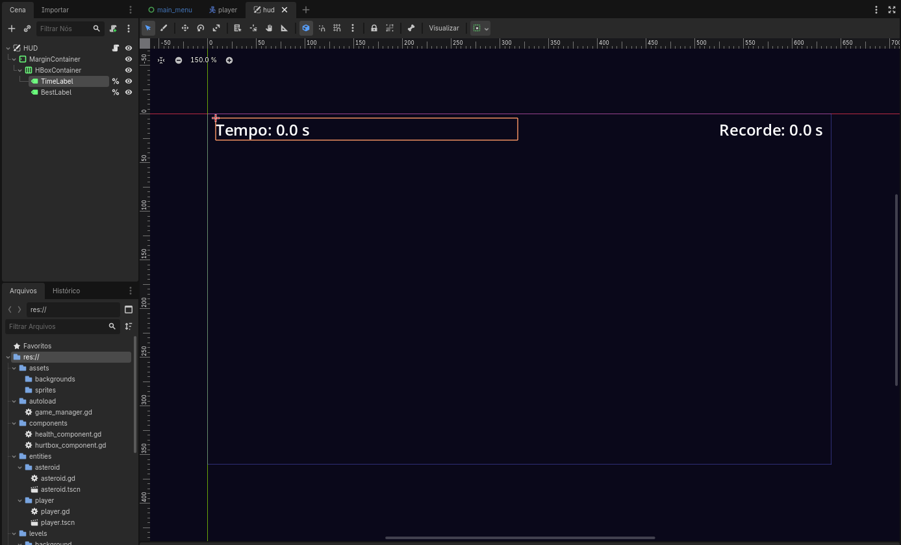
HUD: script
%TimeLabel acha o nó pelo nome único: funciona mesmo se você mudar o Label de lugar na árvore.ui/hud/hud.gd
extends CanvasLayer
@onready var time_label: Label = %TimeLabel
@onready var best_label: Label = %BestLabel
func _ready() -> void:
best_label.text = "Recorde: %.1f s" % GameManager.best_time
func _process(_delta: float) -> void:
time_label.text = "Tempo: %.1f s" % GameManager.time_survivedComponentes: por quê?
- A nave precisa de vida e de uma área que recebe dano.
- Inimigos, chefões e escudos (no futuro) também precisam disso.
- Em vez de copiar código, criamos componentes: nós com
class_nameque aparecem na janela Criar Novo Nó igual aos nós do Godot. - HealthComponent (Node): guarda a vida e emite
died. - HurtboxComponent (Area2D): quando algo perigoso encosta, tira vida do HealthComponent.
Por quê? Componente bom não sabe quem é o dono. O HealthComponent não sabe que está numa nave: só avisa "morri".
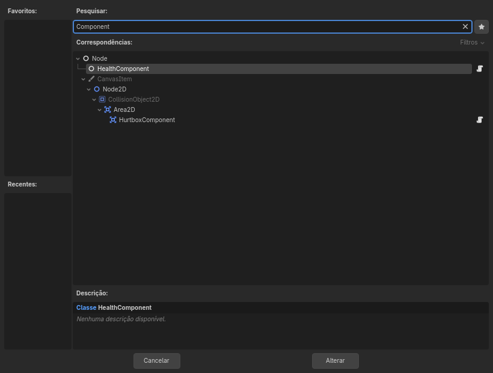
HealthComponent (1/2)
Crie em
components/health_component.gd. max_health = 1 hoje; amanhã 3 corações é só mudar no Inspetor.components/health_component.gd
class_name HealthComponent
extends Node
## Componente de vida: guarda a vida de quem for "dono" dele e avisa quando morrer.
## Pode ser usado no player, em inimigos, em chefões...
## Emitido sempre que a vida muda (útil para barras de vida e corações).
signal health_changed(current: int, maximum: int)
## Emitido quando a vida chega a zero.
signal died
@export var max_health: int = 1
var current_health: int
func _ready() -> void:
current_health = max_healthHealthComponent (2/2)
components/health_component.gd
func take_damage(amount: int) -> void:
if current_health <= 0:
return
current_health = maxi(current_health - amount, 0)
health_changed.emit(current_health, max_health)
if current_health == 0:
died.emit()
func heal(amount: int) -> void:
current_health = mini(current_health + amount, max_health)
health_changed.emit(current_health, max_health)HurtboxComponent
Aqui o sinal é conectado por código porque faz parte do próprio componente: quem usa o componente não precisa lembrar de conectar nada.
components/hurtbox_component.gd
class_name HurtboxComponent
extends Area2D
## Componente "área de dano": quando um corpo perigoso encosta nele,
## tira vida do HealthComponent ligado no Inspector.
@export var health_component: HealthComponent
@export var damage_per_hit: int = 1
func _ready() -> void:
body_entered.connect(_on_body_entered)
func _on_body_entered(_body: Node2D) -> void:
health_component.take_damage(damage_per_hit)Encaixando os componentes no Player
- Abra player.tscn → Ctrl + A → busque HealthComponent → Criar.
- Ctrl + A → HurtboxComponent → dê a ele um CollisionShape2D (círculo raio 10).
- No HurtboxComponent: Health Component → Atribuir → escolha o HealthComponent.
- Collision: Layer nenhuma, Mask = 2 (asteroides).
- No nó Player → aba Grupos → adicione o grupo
player(usaremos na dificuldade).
Ferramenta nativa A ligação entre componentes é feita no Inspetor (export), não com caminhos escritos no código.
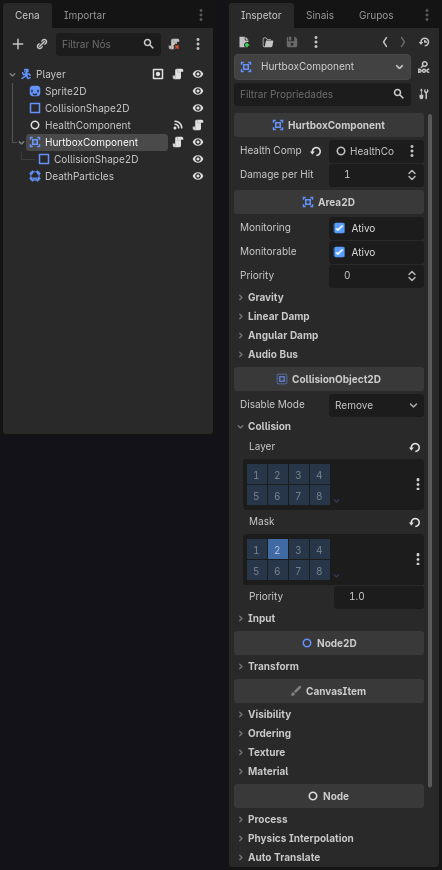
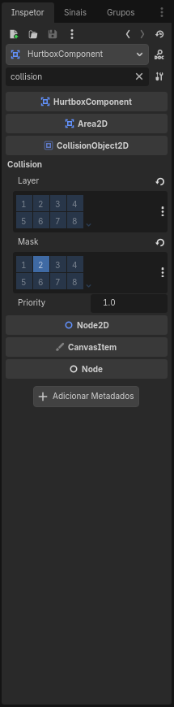
Explosão com partículas
- No Player, adicione CPUParticles2D → DeathParticles.
- Emitting desligado, One Shot ligado, Explosiveness 1.
- Amount 32, Lifetime 0.8, Spread 180°, Gravity (0, 0).
- Initial Velocity 40–140, Damping 60–100, Scale Amount 2–4, Color laranja.
Ferramenta nativa Mexa nos valores com o nó selecionado: o viewport mostra a explosão em tempo real (menu CPUParticles2D → Restart Emission).
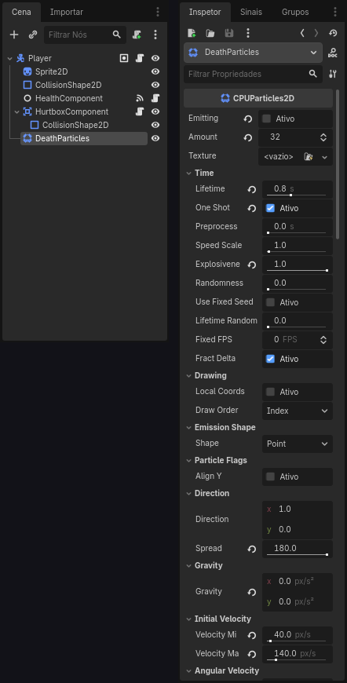
Conectando a morte
- Selecione o HealthComponent → aba Sinais.
- Duplo clique em
died()→ escolha o nó Player → Conectar. - O Godot cria
_on_health_component_diedno player.gd. Complete com o código do próximo slide.
Ferramenta nativa Repare: o sinal
died que criamos no nosso script aparece na aba Sinais igualzinho aos sinais nativos.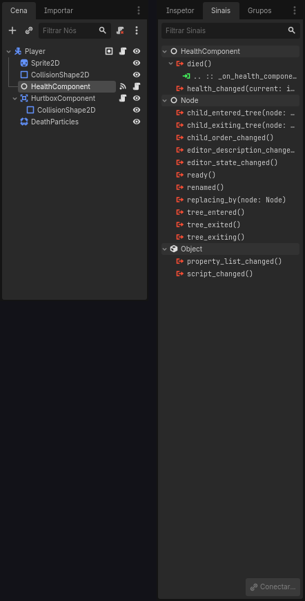
Player: script final (1/2)
Novidades: as variáveis
@onready e a função _on_health_component_died. Ao morrer a nave some, explode e avisa o GameManager.entities/player/player.gd
class_name Player
extends CharacterBody2D
## Velocidade máxima da nave (pixels por segundo).
@export var speed: float = 180.0
## Quão rápido a nave acelera e freia.
@export var acceleration: float = 900.0
## Quão rápido a nave gira para a direção do movimento.
@export var rotation_speed: float = 10.0
@onready var sprite: Sprite2D = $Sprite2D
@onready var death_particles: CPUParticles2D = $DeathParticlesPlayer: script final (2/2)
entities/player/player.gd
func _physics_process(delta: float) -> void:
var direction := Input.get_vector("move_left", "move_right", "move_up", "move_down")
velocity = velocity.move_toward(direction * speed, acceleration * delta)
move_and_slide()
if direction != Vector2.ZERO:
rotation = lerp_angle(rotation, direction.angle(), rotation_speed * delta)
func _on_health_component_died() -> void:
set_physics_process(false)
sprite.hide()
death_particles.emitting = true
GameManager.end_game()Tela de Game Over
- Nova cena CanvasLayer → GameOver, Layer = 10. Salve em
ui/game_over/game_over.tscn - ColorRect (Dim): Layout Full Rect, cor preta com alpha 0.6.
- CenterContainer (Full Rect) → VBoxContainer → Labels TitleLabel e ResultLabel (%) e Buttons RestartButton (%) e MenuButton.
- Um Timer ShowDelay (Wait Time 1, One Shot) para dar tempo de ver a explosão.
- Conecte pela aba Sinais:
presseddos 2 botões etimeoutdo ShowDelay. - Instancie o GameOver na cena Game e clique no olho dele para escondê-lo no editor (o script mostra a tela na hora certa).
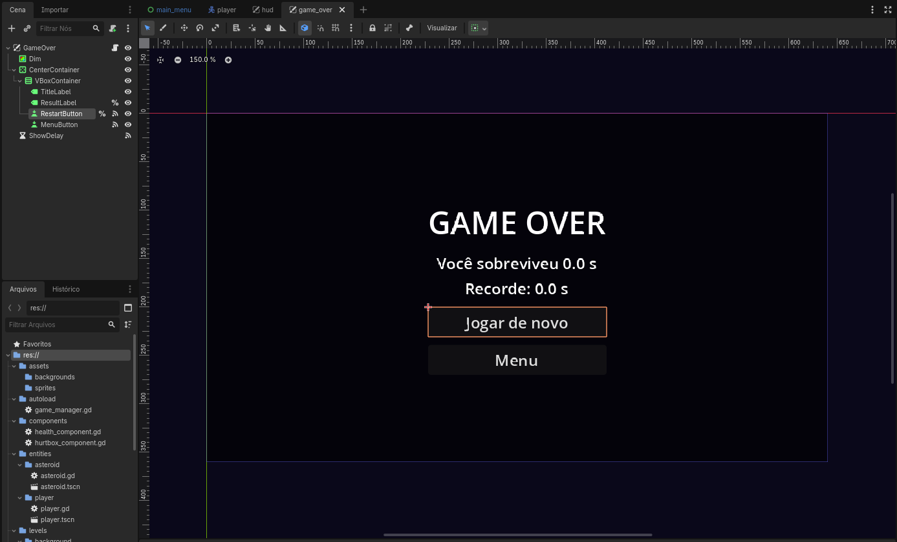
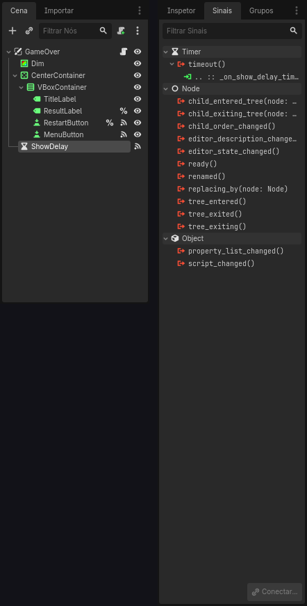
Game Over: script (1/2)
A tela começa escondida e só aparece quando o GameManager avisa
game_over. grab_focus() deixa jogar de novo apertando Enter ou no controle.ui/game_over/game_over.gd
extends CanvasLayer
@onready var result_label: Label = %ResultLabel
@onready var restart_button: Button = %RestartButton
@onready var show_delay: Timer = $ShowDelay
func _ready() -> void:
hide()
GameManager.game_over.connect(_on_game_over)
func _on_game_over() -> void:
# Espera um pouquinho para dar tempo de ver a explosão.
show_delay.start()Game Over: script (2/2)
ui/game_over/game_over.gd
func _on_show_delay_timeout() -> void:
var text := "Você sobreviveu %.1f s\nRecorde: %.1f s"
result_label.text = text % [GameManager.time_survived, GameManager.best_time]
show()
restart_button.grab_focus()
func _on_restart_button_pressed() -> void:
GameManager.go_to_game()
func _on_menu_button_pressed() -> void:
GameManager.go_to_menu()Menu inicial
- Nova cena Interface de Usuário (Control) → MainMenu. Salve em
ui/main_menu/main_menu.tscn - CenterContainer (Full Rect) → VBoxContainer → TitleLabel ("ASTRODASH", tamanho 48), BestLabel (%), PlayButton (%) e QuitButton.
- Conecte o
presseddos dois botões ao MainMenu. - Botão direito em
main_menu.tscn→ Definir como Cena Principal.
Ferramenta nativa Use Theme Overrides → Font Sizes no Inspetor para aumentar só o título.
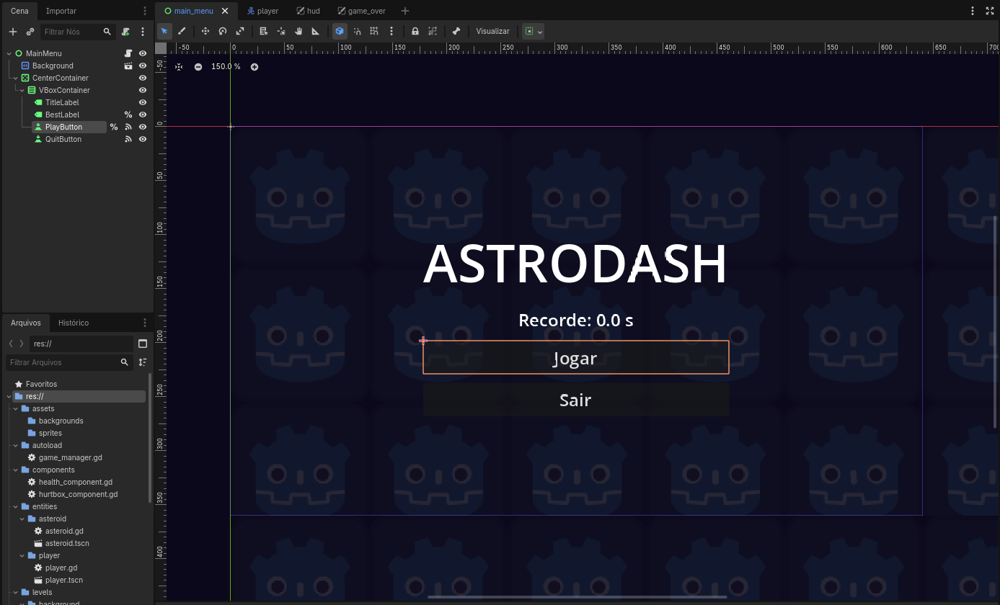
Menu: script
ui/main_menu/main_menu.gd
extends Control
@onready var best_label: Label = %BestLabel
@onready var play_button: Button = %PlayButton
func _ready() -> void:
best_label.text = "Recorde: %.1f s" % GameManager.best_time
play_button.grab_focus()
func _on_play_button_pressed() -> void:
GameManager.go_to_game()
func _on_quit_button_pressed() -> void:
get_tree().quit()Dificuldade com uma Curve
- Com o tempo, os asteroides nascem mais rápido e voam mais rápido.
- Em vez de fórmulas, usamos um recurso Curve exportado: você desenha a curva de dificuldade no Inspetor.
- Eixo X = progresso do tempo (0 → 1 em Time To Max Difficulty segundos). Eixo Y = dificuldade (0 → 1).
- Parte dos asteroides (Aim At Player Chance) mira na nave, usando o grupo
player: ficar parado num canto não salva ninguém. - O grupo Dificuldade no Inspetor vem do
@export_group.
Ferramenta nativa Clique na curva no Inspetor para editar: arraste os pontos, clique com o direito para adicionar. Teste curvas diferentes!
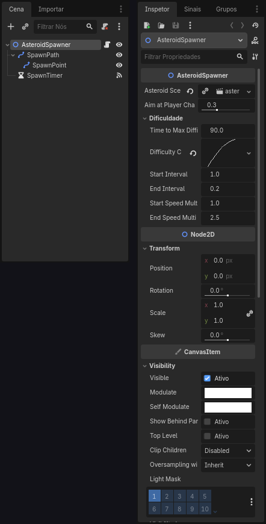
Spawner: script final (1/3)
Selecione o AsteroidSpawner → Difficulty Curve → Novo Curve → desenhe uma curva que sobe rápido no começo e suaviza no fim.
systems/asteroid_spawner/asteroid_spawner.gd
class_name AsteroidSpawner
extends Node2D
## Cria asteroides em volta da tela, cruzando a tela em direções aleatórias.
## A dificuldade sobe com o tempo seguindo a curva do Inspector.
@export var asteroid_scene: PackedScene
## Chance (0 a 1) de um asteroide vir mirando direto no player.
@export_range(0.0, 1.0) var aim_at_player_chance: float = 0.3
@export_group("Dificuldade")
## Tempo (em segundos) até chegar na dificuldade máxima.
@export var time_to_max_difficulty: float = 90.0
## X = progresso do tempo (0 a 1), Y = dificuldade (0 a 1).
@export var difficulty_curve: Curve
@export var start_interval: float = 1.0
@export var end_interval: float = 0.2
@export var start_speed_multiplier: float = 1.0
@export var end_speed_multiplier: float = 2.5
var speed_multiplier: float = 1.0Spawner: script final (2/3)
systems/asteroid_spawner/asteroid_spawner.gd
@onready var spawn_point: PathFollow2D = $SpawnPath/SpawnPoint
@onready var spawn_timer: Timer = $SpawnTimer
func _ready() -> void:
GameManager.game_over.connect(spawn_timer.stop)
func _on_spawn_timer_timeout() -> void:
_update_difficulty()
spawn_point.progress_ratio = randf()
var asteroid: Asteroid = asteroid_scene.instantiate()
add_child(asteroid)
asteroid.global_position = spawn_point.global_position
var target := _pick_target()
asteroid.launch(asteroid.global_position.direction_to(target), speed_multiplier)Spawner: script final (3/3)
systems/asteroid_spawner/asteroid_spawner.gd
func _update_difficulty() -> void:
var progress := clampf(GameManager.time_survived / time_to_max_difficulty, 0.0, 1.0)
var difficulty := difficulty_curve.sample(progress) if difficulty_curve else progress
spawn_timer.wait_time = lerpf(start_interval, end_interval, difficulty)
speed_multiplier = lerpf(start_speed_multiplier, end_speed_multiplier, difficulty)
## Escolhe para onde o asteroide vai: às vezes no player, senão um ponto qualquer da tela.
func _pick_target() -> Vector2:
var player := get_tree().get_first_node_in_group("player") as Node2D
if player and randf() < aim_at_player_chance:
return player.global_position
var screen := get_viewport_rect().size
return Vector2(randf_range(0, screen.x), randf_range(0, screen.y))Fundo animado com Parallax2D
- Nova cena com raiz Parallax2D → Background. Salve em
levels/background/background.tscn - Parallax2D: Repeat Size = (640, 360), Autoscroll = (-20, 0).
- Filho Sprite2D: Texture = icon.svg, Centered desligado, Region → Enabled e Rect = (0, 0, 640, 360).
- CanvasItem → Texture → Repeat =
Enabled(o ícone se repete). Modulate alpha ≈ 30. - Instancie o Background como primeiro filho do Game e do MainMenu.
Ferramenta nativa O Parallax2D faz o fundo andar e se repetir infinitamente, sem uma linha de código. Na 2ª parte é só trocar a textura por um fundo de estrelas 640×360.
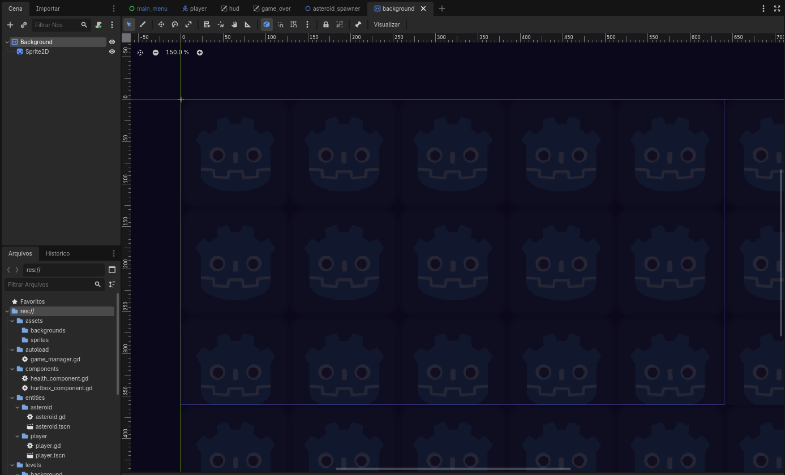
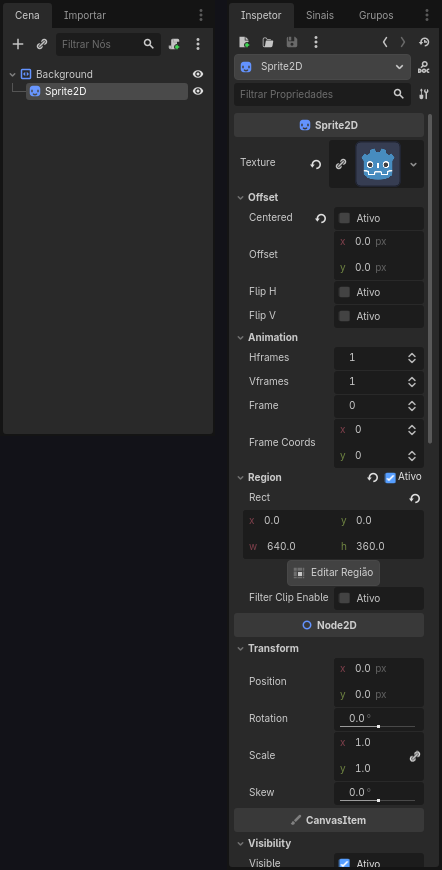
Tema global da interface
- Arquivos → botão direito em
ui/→ Novo → Recurso → Theme → salveui/theme.tres - No Inspetor do tema: Default Font Size = 16.
- Configurações do Projeto → busque
theme/custom→ GUI → Tema → Personalizado =res://ui/theme.tres.
Por quê? Na 2ª parte, colocar uma fonte pixel art no tema muda todos os textos do jogo de uma vez.
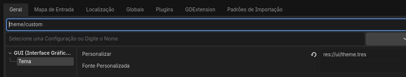
A cena Game completa
| Nó | O que faz |
|---|---|
| Background | Fundo animado (Parallax2D) |
| Walls | Prende a nave dentro da tela |
| AsteroidSpawner | Cria asteroides e controla a dificuldade |
| Player | A nave, com seus componentes |
| HUD | Tempo e recorde |
| GameOver | Aparece quando o player morre |
Dica A ordem na árvore é a ordem de desenho: de cima (atrás) para baixo (na frente).
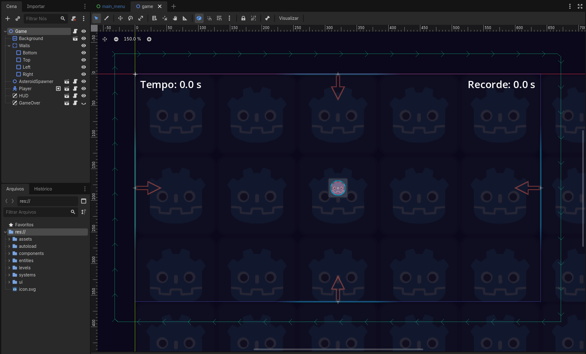
Jogo pronto!
- Menu → Jogar → sobreviver → explosão → Game Over → jogar de novo.
- O recorde fica salvo em
user://save.cfgpelo ConfigFile, então continua lá ao fechar o jogo.
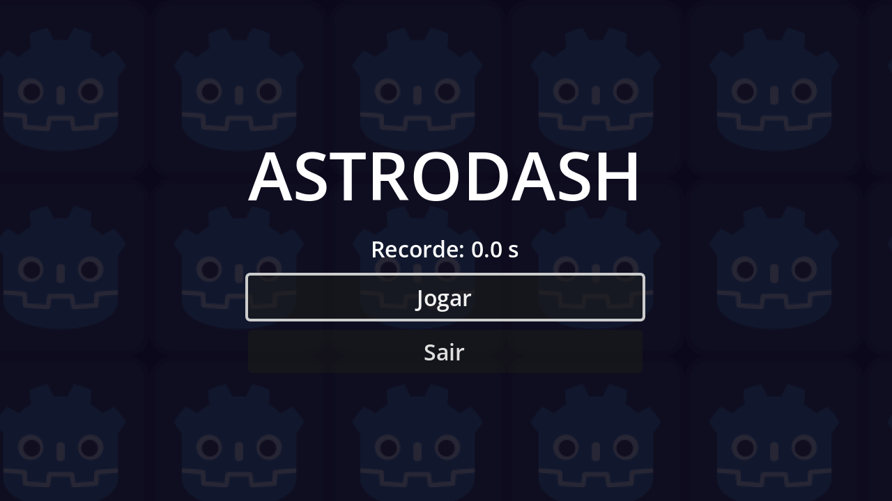
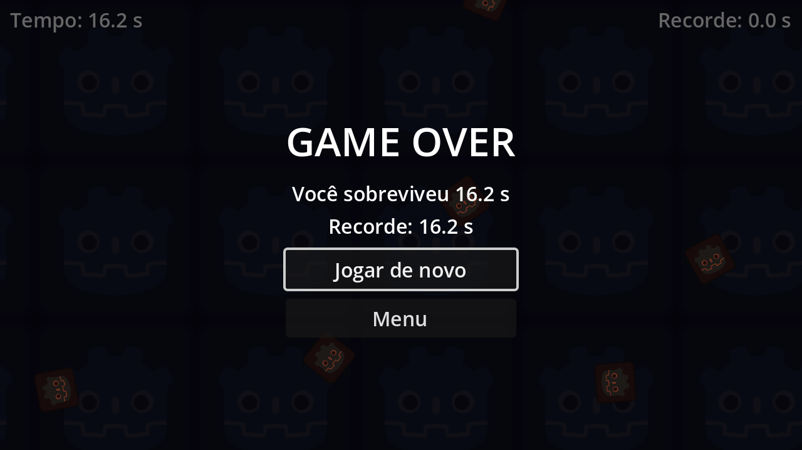
Preparando para a arte
2ª parte do curso: LibreSprite
- 1Onde cada arte entra
- 2Tamanhos
- 3Como trocar
Onde cada arte entra
| Arte | Tamanho sugerido | Onde trocar |
|---|---|---|
| Nave | 32×32 (apontando para a direita) | entities/player/player.tscn → Sprite2D → Texture |
| Asteroide | 32×32 (pode fazer 2-3 variações) | entities/asteroid/asteroid.tscn → Sprite2D → Texture |
| Fundo | 640×360 (bordas que se encaixam) | levels/background/background.tscn → Sprite2D → Texture |
| Partícula | 4×4 ou 8×8 | Player → DeathParticles → Texture |
| Fonte | Fonte pixel (.ttf) | ui/theme.tres → Default Font |
Dica Salve os PNGs exportados do LibreSprite em
assets/sprites/ e assets/backgrounds/. O filtro Nearest já está ligado no projeto todo.Como trocar uma arte
- No LibreSprite: Arquivo → Exportar → PNG na pasta
assets/sprites/do projeto. - Volte ao Godot: o arquivo aparece sozinho nos Arquivos.
- Abra a cena (ex.: player.tscn) → selecione o Sprite2D.
- Arraste o PNG para Texture.
- Volte o Scale para
(1, 1)(o 0.25 era só para o ícone de 128px). - Se a arte tiver outro tamanho, ajuste o raio do CollisionShape2D.
Por quê? Como o asteroide é uma cena só, trocar a arte dele muda todos os asteroides do jogo. Essa é a vantagem de separar em cenas.
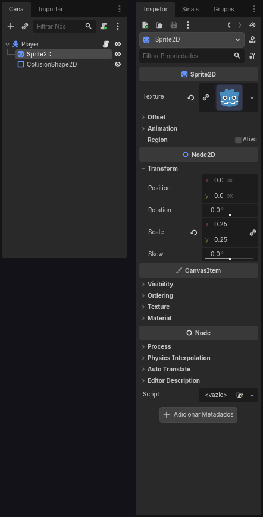
Desafios para quem terminar antes
- 3 vidas:
max_health = 3+ mostrar corações no HUD usando o sinalhealth_changed. - Invencibilidade por 1 segundo depois de levar dano (Timer + piscar com AnimationPlayer).
- Asteroides de tamanhos diferentes: crie Cenas Herdadas de asteroid.tscn com outro sprite e colisão.
- Power-up de escudo: um Area2D que chama
heal()no HealthComponent. - Som: AudioStreamPlayer para a explosão e música no menu.
- Tremer a tela: uma Camera2D com offset aleatório quando o player morre.
Bom jogo!
Próximo passo: abrir o LibreSprite e dar cara própria ao AstroDash.
Todos os códigos estão nos slides seguintes (Apêndice) e no repositório.
entities/player/player.gd
entities/player/player.gd
class_name Player
extends CharacterBody2D
## Velocidade máxima da nave (pixels por segundo).
@export var speed: float = 180.0
## Quão rápido a nave acelera e freia.
@export var acceleration: float = 900.0
## Quão rápido a nave gira para a direção do movimento.
@export var rotation_speed: float = 10.0
func _physics_process(delta: float) -> void:
var direction := Input.get_vector("move_left", "move_right", "move_up", "move_down")
velocity = velocity.move_toward(direction * speed, acceleration * delta)
move_and_slide()
if direction != Vector2.ZERO:
rotation = lerp_angle(rotation, direction.angle(), rotation_speed * delta)entities/asteroid/asteroid.gd
entities/asteroid/asteroid.gd
class_name Asteroid
extends RigidBody2D
@export var min_speed: float = 60.0
@export var max_speed: float = 120.0
## Velocidade máxima de giro (radianos por segundo).
@export var max_spin: float = 3.0
## Lança o asteroide em uma direção. Quem chama é o AsteroidSpawner.
func launch(direction: Vector2, speed_multiplier: float = 1.0) -> void:
linear_velocity = direction * randf_range(min_speed, max_speed) * speed_multiplier
angular_velocity = randf_range(-max_spin, max_spin)systems/asteroid_spawner/asteroid_spawner.gd
systems/asteroid_spawner/asteroid_spawner.gd
class_name AsteroidSpawner
extends Node2D
## Cria asteroides em volta da tela, cruzando a tela em direções aleatórias.
@export var asteroid_scene: PackedScene
@onready var spawn_point: PathFollow2D = $SpawnPath/SpawnPointfunc _on_spawn_timer_timeout() -> void:
spawn_point.progress_ratio = randf()
var asteroid: Asteroid = asteroid_scene.instantiate()
add_child(asteroid)
asteroid.global_position = spawn_point.global_position
var target := _pick_target()
asteroid.launch(asteroid.global_position.direction_to(target))
## Escolhe um ponto qualquer da tela para o asteroide atravessar.
func _pick_target() -> Vector2:
var screen := get_viewport_rect().size
return Vector2(randf_range(0, screen.x), randf_range(0, screen.y))autoload/game_manager.gd
autoload/game_manager.gd
extends Node
## GameManager (Autoload): guarda o estado da partida e o recorde.
## Qualquer script do jogo pode acessar com GameManager.alguma_coisa
## Avisa que uma partida nova começou.
signal game_started
## Avisa que o jogador morreu e a partida acabou.
signal game_over
const GAME_SCENE := "res://levels/game/game.tscn"
const MENU_SCENE := "res://ui/main_menu/main_menu.tscn"
const SAVE_PATH := "user://save.cfg"
var time_survived: float = 0.0
var best_time: float = 0.0
var is_playing: bool = false
func _ready() -> void:
load_best_time()
func _process(delta: float) -> void:
if is_playing:
time_survived += delta
func start_game() -> void:
time_survived = 0.0
is_playing = true
game_started.emit()func end_game() -> void:
if not is_playing:
return
is_playing = false
if time_survived > best_time:
best_time = time_survived
save_best_time()
game_over.emit()
func go_to_game() -> void:
get_tree().change_scene_to_file(GAME_SCENE)
func go_to_menu() -> void:
is_playing = false
get_tree().change_scene_to_file(MENU_SCENE)
func save_best_time() -> void:
var config := ConfigFile.new()
config.set_value("score", "best_time", best_time)
config.save(SAVE_PATH)
func load_best_time() -> void:
var config := ConfigFile.new()
if config.load(SAVE_PATH) == OK:
best_time = config.get_value("score", "best_time", 0.0)components/health_component.gd
components/health_component.gd
class_name HealthComponent
extends Node
## Componente de vida: guarda a vida de quem for "dono" dele e avisa quando morrer.
## Pode ser usado no player, em inimigos, em chefões...
## Emitido sempre que a vida muda (útil para barras de vida e corações).
signal health_changed(current: int, maximum: int)
## Emitido quando a vida chega a zero.
signal died
@export var max_health: int = 1
var current_health: intfunc _ready() -> void:
current_health = max_health
func take_damage(amount: int) -> void:
if current_health <= 0:
return
current_health = maxi(current_health - amount, 0)
health_changed.emit(current_health, max_health)
if current_health == 0:
died.emit()
func heal(amount: int) -> void:
current_health = mini(current_health + amount, max_health)
health_changed.emit(current_health, max_health)components/hurtbox_component.gd
components/hurtbox_component.gd
class_name HurtboxComponent
extends Area2D
## Componente "área de dano": quando um corpo perigoso encosta nele,
## tira vida do HealthComponent ligado no Inspector.
@export var health_component: HealthComponent
@export var damage_per_hit: int = 1
func _ready() -> void:
body_entered.connect(_on_body_entered)
func _on_body_entered(_body: Node2D) -> void:
health_component.take_damage(damage_per_hit)entities/player/player.gd
entities/player/player.gd
class_name Player
extends CharacterBody2D
## Velocidade máxima da nave (pixels por segundo).
@export var speed: float = 180.0
## Quão rápido a nave acelera e freia.
@export var acceleration: float = 900.0
## Quão rápido a nave gira para a direção do movimento.
@export var rotation_speed: float = 10.0
@onready var sprite: Sprite2D = $Sprite2D
@onready var death_particles: CPUParticles2D = $DeathParticlesfunc _physics_process(delta: float) -> void:
var direction := Input.get_vector("move_left", "move_right", "move_up", "move_down")
velocity = velocity.move_toward(direction * speed, acceleration * delta)
move_and_slide()
if direction != Vector2.ZERO:
rotation = lerp_angle(rotation, direction.angle(), rotation_speed * delta)
func _on_health_component_died() -> void:
set_physics_process(false)
sprite.hide()
death_particles.emitting = true
GameManager.end_game()entities/asteroid/asteroid.gd
entities/asteroid/asteroid.gd
class_name Asteroid
extends RigidBody2D
@export var min_speed: float = 60.0
@export var max_speed: float = 120.0
## Velocidade máxima de giro (radianos por segundo).
@export var max_spin: float = 3.0
## Lança o asteroide em uma direção. Quem chama é o AsteroidSpawner.
func launch(direction: Vector2, speed_multiplier: float = 1.0) -> void:
linear_velocity = direction * randf_range(min_speed, max_speed) * speed_multiplier
angular_velocity = randf_range(-max_spin, max_spin)systems/asteroid_spawner/asteroid_spawner.gd
systems/asteroid_spawner/asteroid_spawner.gd
class_name AsteroidSpawner
extends Node2D
## Cria asteroides em volta da tela, cruzando a tela em direções aleatórias.
## A dificuldade sobe com o tempo seguindo a curva do Inspector.
@export var asteroid_scene: PackedScene
## Chance (0 a 1) de um asteroide vir mirando direto no player.
@export_range(0.0, 1.0) var aim_at_player_chance: float = 0.3
@export_group("Dificuldade")
## Tempo (em segundos) até chegar na dificuldade máxima.
@export var time_to_max_difficulty: float = 90.0
## X = progresso do tempo (0 a 1), Y = dificuldade (0 a 1).
@export var difficulty_curve: Curve
@export var start_interval: float = 1.0
@export var end_interval: float = 0.2
@export var start_speed_multiplier: float = 1.0
@export var end_speed_multiplier: float = 2.5
var speed_multiplier: float = 1.0
@onready var spawn_point: PathFollow2D = $SpawnPath/SpawnPoint
@onready var spawn_timer: Timer = $SpawnTimer
func _ready() -> void:
GameManager.game_over.connect(spawn_timer.stop)func _on_spawn_timer_timeout() -> void:
_update_difficulty()
spawn_point.progress_ratio = randf()
var asteroid: Asteroid = asteroid_scene.instantiate()
add_child(asteroid)
asteroid.global_position = spawn_point.global_position
var target := _pick_target()
asteroid.launch(asteroid.global_position.direction_to(target), speed_multiplier)
func _update_difficulty() -> void:
var progress := clampf(GameManager.time_survived / time_to_max_difficulty, 0.0, 1.0)
var difficulty := difficulty_curve.sample(progress) if difficulty_curve else progress
spawn_timer.wait_time = lerpf(start_interval, end_interval, difficulty)
speed_multiplier = lerpf(start_speed_multiplier, end_speed_multiplier, difficulty)
## Escolhe para onde o asteroide vai: às vezes no player, senão um ponto qualquer da tela.
func _pick_target() -> Vector2:
var player := get_tree().get_first_node_in_group("player") as Node2D
if player and randf() < aim_at_player_chance:
return player.global_position
var screen := get_viewport_rect().size
return Vector2(randf_range(0, screen.x), randf_range(0, screen.y))levels/game/game.gd
levels/game/game.gd
extends Node2D
func _ready() -> void:
GameManager.start_game()ui/hud/hud.gd
ui/hud/hud.gd
extends CanvasLayer
@onready var time_label: Label = %TimeLabel
@onready var best_label: Label = %BestLabel
func _ready() -> void:
best_label.text = "Recorde: %.1f s" % GameManager.best_time
func _process(_delta: float) -> void:
time_label.text = "Tempo: %.1f s" % GameManager.time_survivedui/game_over/game_over.gd
ui/game_over/game_over.gd
extends CanvasLayer
@onready var result_label: Label = %ResultLabel
@onready var restart_button: Button = %RestartButton
@onready var show_delay: Timer = $ShowDelay
func _ready() -> void:
hide()
GameManager.game_over.connect(_on_game_over)
func _on_game_over() -> void:
# Espera um pouquinho para dar tempo de ver a explosão.
show_delay.start()func _on_show_delay_timeout() -> void:
var text := "Você sobreviveu %.1f s\nRecorde: %.1f s"
result_label.text = text % [GameManager.time_survived, GameManager.best_time]
show()
restart_button.grab_focus()
func _on_restart_button_pressed() -> void:
GameManager.go_to_game()
func _on_menu_button_pressed() -> void:
GameManager.go_to_menu()ui/main_menu/main_menu.gd
ui/main_menu/main_menu.gd
extends Control
@onready var best_label: Label = %BestLabel
@onready var play_button: Button = %PlayButton
func _ready() -> void:
best_label.text = "Recorde: %.1f s" % GameManager.best_time
play_button.grab_focus()
func _on_play_button_pressed() -> void:
GameManager.go_to_game()
func _on_quit_button_pressed() -> void:
get_tree().quit()